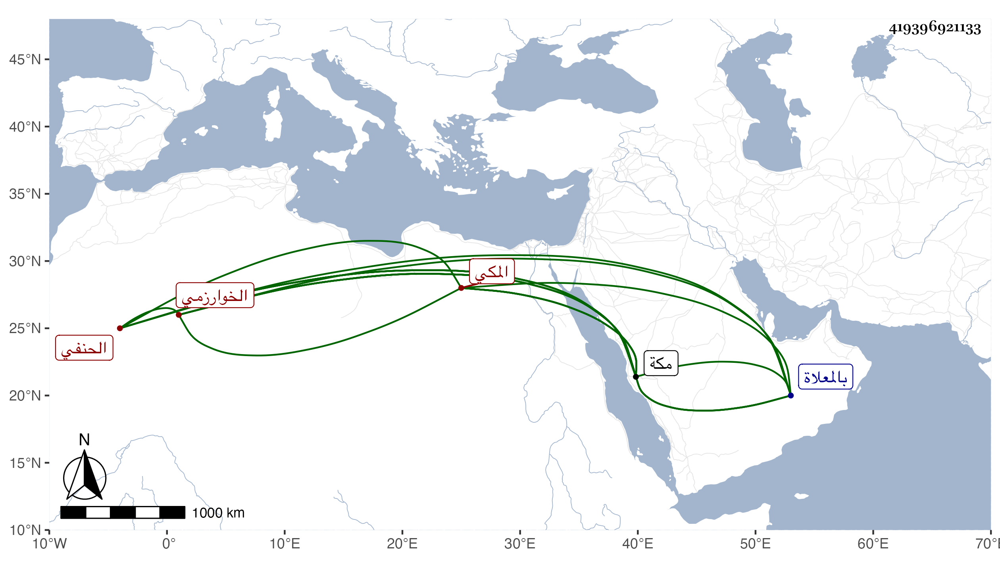

0902Sakhawi.DawLamic.ITO20230111-ara1.EIS1600.419396921133
Biography ID: 419396921133
158
محمد بن محمود بن محمود بن محمد بن عمر بن فخر الدين الشمس الخوارزمي المكي الحنفي والد الشهاب أحمد ويعرف بالمعيد لكونه كان معيدا بدرس يلبغا . ولي إمامة مقام الحنفية بمكة بعد عمر بن محمد بن أبي بكر الشيبي في سنة ثمانين وسبعمائة ثم تركها لولده قبل موته بأيام مع سبق مباشرته عنه عشر سنين لعجزه وكذا ولي تدريس درس إيتمش ومشيخة رباط رامشت ، وكان جيد المعرفة بالنحو والصرف ومتعلقاتهما ذا مشاركة حسنة في النحو ونظم ونثر وحظ وافر من الخير والعبادة وقد سمع من العفيف المطري جزءا خرجه له الذهبي وغير ذلك ومن اليافعي والكمال بن حبيب ومحمد بن أحمد بن عبد المعطي والأمين ابن الشماع في آخرين ودرس أخذ عنه غير واحد من فقهاء مكة وغيرهم وكذا حدث سمع منه الفضلاء بل روى عن الحجار بالإجازة العامة وكان يقول أنه رأى النبي صلى الله عليه وسلم وأنه قال له يا محمد قل آمنت بالله وملائكته وكتبه ورسله واليوم الآخر والقدر خيره وشره من الله . ومن نظمه :
| أهواك ولو حرصت من أهواكا | الروح فداك ربنا أبقاكا |
| إن مت يقول كل من يلقاني | بشراك قتيل حبه بشراكا |
وقوله :
| أفنى بكل وجودي في محبته | وأنثني ببقاء الحب ما بقيا |
| لا خير في الحب إن لم يفن صاحبه | وكيف يوجد صب بعد ما فنيا |
توفي في سلخ جمادى الأولى سنة ثلاث عشرة بمكة ودفن بالمعلاة ، وكان قد كف قبل موته بنحو عشر سنين ثم عولج فأبصر قليلا بحيث أنه صار يكتب أسطرا قليلة . ذكره الفاسي بأطول من هذا وتبعه التقي بن فهد في معجمه وكذا ذكره شيخنا في إنبائه باختصار فقال : محمد بن محمود بن بون أعاد بدرس يلبغا بمكة فعرف بالمعيد وأم بمقام الحنفية زيادة عن ثلاثين سنة ، وحدث عن العفيف والأمين الأقشهري وغيرهما وحج خمسين حجة وكان عارفا بالعربية مشاركا في الفقه وغيره ، وحدث بالإجازة العامة عن الحجار . ومات وقد جاز الثمانين . وهو في عقود المقريزي رحمه الله .
